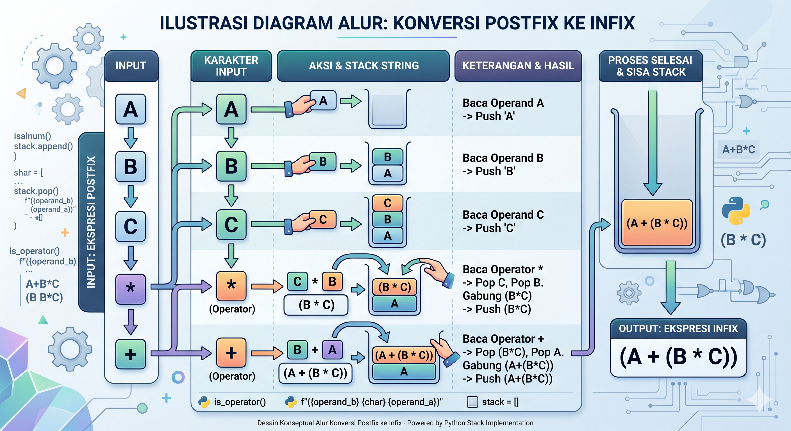

Konversi Postfix ke Infix
Prinsip: Ekspresi postfix dibaca secara normal (dari kiri ke kanan). Berbeda dengan konversi ke postfix, dalam proses ini Stack digunakan untuk menyimpan string ekspresi sementara, bukan operator.
Langkah-langkah:
- Baca ekspresi postfix dari arah kiri ke kanan karakter demi karakter.
- Jika karakter yang dibaca adalah operand (huruf atau angka), masukkan (push) ke dalam stack.
- Jika karakter yang dibaca adalah operator (+, -, *, /), lakukan:
- Ambil (pop) satu operand teratas dari stack, simpan sebagai
operand_A.
- Ambil (pop) satu lagi operand teratas dari stack, simpan sebagai
operand_B.
- Gabungkan ketiganya menjadi string dengan urutan:
(operand_B operator operand_A).
- Masukkan kembali (push) string hasil gabungan tersebut ke dalam stack.
- Lakukan terus hingga seluruh ekspresi habis dibaca.
- Setelah selesai, elemen terakhir yang tersisa di dalam stack adalah hasil akhir ekspresi Infix lengkap.
Contoh Visualisasi: Ekspresi Postfix A B C * +
1. Baca A, B, C: Stack = [A, B, C]
2. Baca *: Pop C (A), Pop B (B). Push (B * C). Stack = [A, (B * C)]
3. Baca +: Pop (B*C) (A), Pop A (B). Push (A + (B * C)). Stack = [(A + (B * C))]
Hasil Akhir: (A + (B * C))
Ilustrasi Diagram Alur
Diagram di bawah ini menggambarkan bagaimana elemen dipindahkan antara input, stack, dan output selama proses konversi menggunakan contoh AB+C*.

Gambar 1: Alur Logika Konversi Postfix ke Infix dengan Stack string.
Implementasi Program (Python)
Berikut adalah kode Python lengkap untuk mengimplementasikan algoritma konversi Postfix ke Infix menggunakan struktur data List sebagai Stack.
def is_operator(char):
"""Mengecek apakah karakter adalah operator."""
return char in ['+', '-', '*', '/', '^']
def postfix_to_infix(postfix_expression):
"""Mengonversi ekspresi postfix menjadi infix berurutan."""
stack = []
# Membaca ekspresi dari kiri ke kanan
for char in postfix_expression:
if not is_operator(char):
# Jika operand, push ke stack
stack.append(char)
else:
# Jika operator, pop dua operand teratas
# Operand pertama yang di-pop adalah operand kanan (A)
try:
operand_a = stack.pop()
operand_b = stack.pop()
# Gabungkan: (Operand_Kiri Operator Operand_Kanan)
new_expression = f"({operand_b} {char} {operand_a})"
# Push kembali string gabungan ke stack
stack.append(new_expression)
except IndexError:
return "Error: Ekspresi Postfix Tidak Valid"
# Hasil akhir adalah satu-satunya elemen tersisa di stack
if len(stack) == 1:
return stack.pop()
else:
return "Error: Ekspresi Postfix Tidak Valid"
# ==========================================
# Uji Coba Program
# ==========================================
if __name__ == "__main__":
expressions = [
"AB+", # Hasil: (A + B)
"ABC*+", # Hasil: (A + (B * C))
"AB+C*", # Hasil: ((A + B) * C)
"ABC*+DE/-" # Hasil: ((A + (B * C)) - (D / E))
]
print("Hasil Konversi Postfix ke Infix:")
print("-" * 35)
for p in expressions:
infix = postfix_to_infix(p)
print(f"Postfix : {p}")
print(f"Infix : {infix}")
print("-" * 35)
Output Program:
Hasil Konversi Postfix ke Infix:
-----------------------------------
Postfix : AB+
Infix : (A + B)
-----------------------------------
Postfix : ABC*+
Infix : (A + (B * C))
-----------------------------------
Postfix : AB+C*
Infix : ((A + B) * C)
-----------------------------------
Postfix : ABC*+DE/-
Infix : ((A + (B * C)) - (D / E))
-----------------------------------
Penjelasan Detail Kode:
def is_operator(char)
Fungsi pembantu untuk memverifikasi apakah karakter yang sedang dibaca adalah simbol matematika (+, -, *, /, ^) atau bukan.
stack = []
List Python digunakan sebagai Stack. Stack ini akan menyimpan string ekspresi sementara, bukan karakter tunggal.
stack.pop()
Mengambil string ekspresi dari atas stack. Saat menemukan operator, dua pop dilakukan: yang pertama untuk sisi kanan operator, yang kedua untuk sisi kiri.
f"({operand_b} {char} {operand_a})"
Menggunakan f-string untuk menggabungkan operand kiri, operator saat ini, dan operand kanan, lalu membungkusnya dengan tanda kurung.
Rangkuman Logika
- Input: Ekspresi dibaca dari Kiri ke Kanan.
- Stack: Menyimpan sub-ekspresi string (hasil penggabungan sementara).
- Operand: Langsung di-push ke Stack.
- Operator: Memicu pengambilan 2 elemen string teratas, digabungkan dengan urutan `(Kiri Operator Kanan)`, lalu di-push kembali ke Stack.
- Hasil: Elemen tunggal yang tersisa di Stack setelah pembacaan selesai.